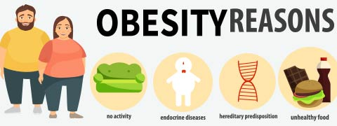
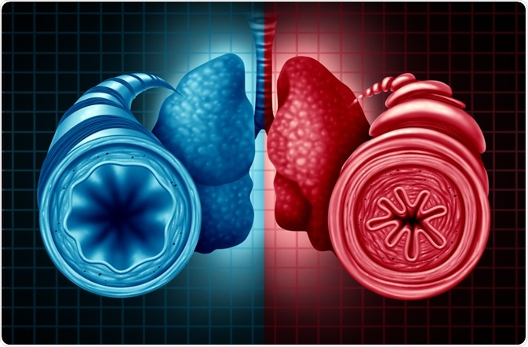
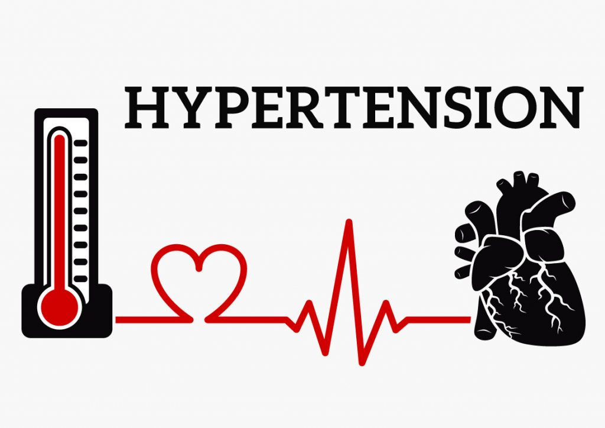
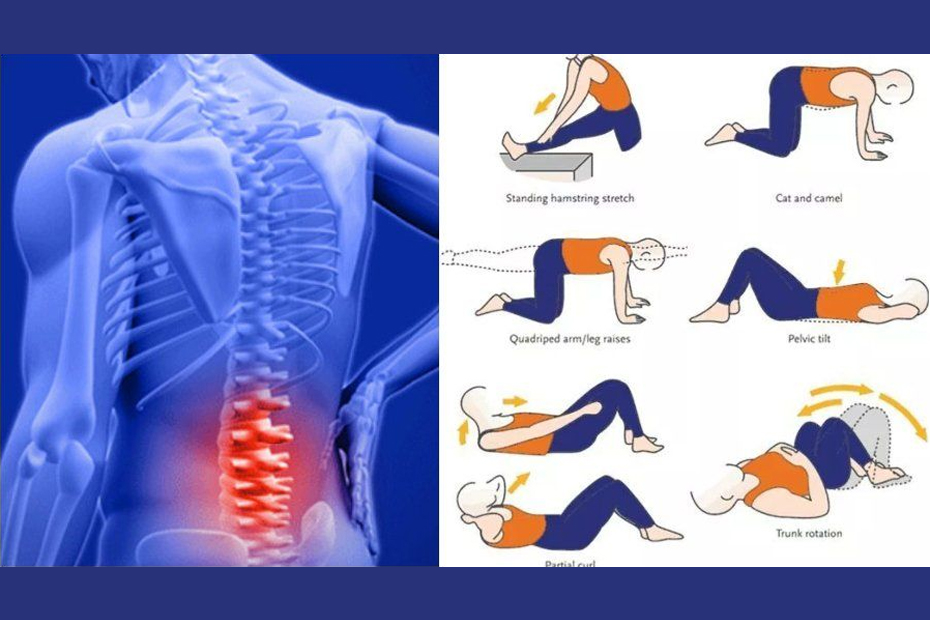

OBESITY, DIABETES, ASTHMA, HYPER-TENSION AND BACK-PAIN
OBESITY
Obesity: Procedure, Benefits and Contraindications for Vajrasana, Hastasana, Trikonasana, Ardha Matsyendrasana
The major cause of obesity is poor lifestyle. Obesity leads to many health problems. More than half of the US population today is
considered obese. Factors like genetics and environment can contribute to obesity, but
there is no doubt that your lifestyle also plays a big role. If you have been gaining pounds lately, then chances are that your
lifestyle could be causing your weight gain. Here are some ways that your lifestyle could be making you obese.
Obesity does not just happen overnight rather it develops gradually from improper diet and poor lifestyle choices.

PREVENTION AND MANAGEMENT
The following are the methods to prevent and manage obesity:
A: Regular Exercise
Sedentary lifestyle leads to Obesity. Regular exercise helps in fighting obesity. In addition to regular exercise
the habit of evening stroll and walk to the market instead of taking the vehicle and use the stairs instead of
the elevator can help a lot to burn calories. Whenever people are free they tend to watch TV, browse the internet
or play computer games instead of doing regular exercise. Habit of cycling also reduces obesity.
B: Avoid Eating Regularly Fast Food
Nowadays people take fast food regularly. This has increased the number of obese people. Due to busy lifestyle
cooking own food is avoided and fast food is given preference and this leads to obesity. Instead of cooking,
ordering a fast food from restaurants is much more convenient. The worst past is that most of the fast foods
are having ingredients of more energy, total fat, saturated fat, carbohydrates and added sugars. Hence in
lifestyle one must have habit to avoid fast food regularly.
C: Avoid Drinking too much Alcohol
Alcohol contains a lot of calories, and heavy drinkers are often to be obese. In a lifestyle avoid drinking
which can reduce obesity.
D: Proper Diet
The unhealthy food choices are examples of bad lifestyle. Overeating habit leads to obesity. By eating fruits
and unrefined carbohydrates one can reduce obesity. Obesity during the childhood can lead to obesity related
health problems in later life. The unhealthy lifestyle continues till adulthood and leads to big problem.
DIABETES
Diabetes: Procedure, Benefits and Contraindications for Bhujangasana, Paschimottasana, PavanMuktasana, ArdhaMatsyendrasana
The Diabetes is also related with lifestyle. It can be managed by the following ways:
A: Food
Healthy eating is a major factor of good lifestyle. The management of diabetes largely depends on type of food
a person is eating. Eating well-balanced meal can prevent diabetes.
B: Proper Coordination of Meals and Medication
Too little food in comparison to diabetes medications especially insulin may lead to hypoglycaemia and can cause
dangerously low blood sugar. However excessive intake of food may cause increase in blood sugar level leading to
hyperglycaemia. A person having healthy lifestyle can easily manage Diabetes.
C: Regular Exercise
Regular Exercise can help to manage diabetes management plan. Whenever work out is done the sugar(glucose) is
used to obtain energy. The regular exercise can improve body's response to insulin. During active lifestyle such as
housework, gardening or walking and cycling can also lower blood sugar level. Drink plenty of water
while exercising because dehydration can affect blood sugar levels.
ASTHMA
Asthma: Procedure, Benefits and Contraindications for Sukhasana, Chakrasana, Gomukhasansa, Parvatasana, Bhujangasana, Paschimottanasana, Matsyasana
Asthma is caused due to constriction of airways. In this condition extra mucus is also produced. Ultimately this leads to
shortness of breath and trigger coughing and wheezing. Generally the symptoms of asthma range from minor to major.

The following are the symptoms of asthma:
1) Shortness of breath
2) Stiffness in chest and pain
3) Infrequent coughing and sneezing
4) Wheezing sound
5) Increased difficuilty in breathing
Asthma is mainly allergy induced. Many allergens trigger asthma. Some time occupational environment can also
lead to asthma as working places may have chemical fumes, gases or dust that can also trigger allergens and can
cause for asthma. certain medications, including beta blockers, aspirin, ibuprofen and naproxen may cause asthma.
Strong emotional situation can also trigger asthma.
PREVENTION AND MANAGEMENT
Mainly prevention is initiated by avoiding the triggers of asthma. Methods of its prevention are given ahead.
a: By using air conditioners
The windows of the air conditioned houses are mainly closed and this reduces the entry of airborne pollens that
can cause asthma.
b: Minimizing dust
Minimizing dust in the house and at working places. For example by removing carpeting and installing hardwood
can reduce the dust.
c: Clean regularly
Keep your home and work place clean. This reduces the dust. Use of mask while cleaning can also prevent asthma.
The asthma can be managed by following ways:
A: Regular Exercise
Regular exercise develops circulatory and respiratory system that helps in relieving symptoms of asthma.
B: Avoid Obesity
It is well known that being obese can worsen symptoms of asthma. Obese are often at higher risk of many health
problems. By avoiding obesity, asthma can by controlled to a great extent.
C: Eat Plenty of Fruits and Vegetables
Eating plenty of fruits and vegetables may develop lung function and that may reduce symptoms of asthma. Many
food items are rich in protective nutrients. They are the antioxidants that boost the immune system.
D: Control Acidity
Some time the acid reflux causes heartburn and that may damage lung airways and worsen asthma symptoms. Controlling
acidity can reduce the symptoms of asthma.
E: Breathing Techniques
The breathing exercise may reduce the symptoms of asthma. Practice of yoga increases fitness and reduce stree
which may lead to reduce the symptoms of asthma.
F: Relaxation Techniques
Relaxation techniques such as meditation reduce stress and this can be helpful in controlling asthma.
Hyper-tension is also known as high blood pressure. Healthy lifestyle changes are important for lowering blood pressure.
Lifestyle plays an important role in treating your high blood pressure. If blood pressure is controlled by healthy lifestyle it can
avoid, delay or reduce the need of medication.

The following are the methods to prevent and manage Hyper-tension:
A: Exercise Regularly
Regular exercise can lower blood pressure to a great extent. It is a well known fact that at least doing exercise
for 30 to 60 minutes every day can lower your blood pressure by 4 to 9 mm/Hg. Ever if a person is diagnosed with
pre hyper-tension, the exercise can avoid hyper-tension.
B: Eating healthy diet
Eating a diet that is rich in whole grains, fruits, vegetables, low-fat dairy products and low fat and cholesterol
can lower blood pressure by up to 14mm/Hg. The proper eating plan to reduce hyper-tension is known as the Dietary
Approaches to Stop Hypertension(DASH diet),
In healthy lifestyle the following are the dietary suggestions as DASH diet:
1: Sodium intake should be minimised and it should not be more than 2,300 mg a day.
2: Reduction of saturated fat to not more than 6% of daily calories and total fat to 27% of daily calories.
3: When using fats while cooking select monounsaturated oils, such as olive or canola oils.
4: Consume more whole grains and vegetables.
5: Consume fresh fruits and vegetables every day.
6: Use nuts, seeds, or legumes in daily diet.
7: Consume modest amounts of protein (not more than 18% of total daily calories). Fish, skinless poultry, and
soya products are the best protein sources.
A healthy lifestyle promotes a habit of eating porper diet which can control hyper-tension to a great extent.
C: Proper Sleeping Habits
Insufficient sleep may raise hyper-tension. People sleeping late night can often lead to hyper-tension as stress
hormone levels increase with sleeplessness. So proper sleep is important constituent of healthy lifestyle and
can reduce blood pressure.
D: Reducing Stress
A person who practises Yoga and relaxation techniques such as meditation may control stress. Even playing games
can also reduce stress. The reduction in stress can also reduce hyper-tension.
E: Reduction in Consumption of Alcohol
If excessive alcohol is consumed regularly it can lead to hyper-tension. The permissible limits is 148ml of wine,
335ml of beer, 45ml of liquor. Excessive drinking can lead to hyper-tension.
F: Avoid Tobacco Products
It is a well known factt that cigarette smoking increases blood pressure. The nicotine in tobacco can raise
10 mm/hg of blood pressure. Smoking throughout the day leads to rise in blood pressure. Avoiding tobacco
products can help in controlling hyper-tension.
The lethargic people often avoid exercise can cause or worsen back pain because of increased stiffness and weakened
muscles. The strengthening excercise for the back muscles always support the spine and prevent Back-Pain.

ACCORDING TO DR. FINKEL, "Movement and exercise also keep the spine healthy flexible
and strong. Gentle forms of exercise, such as yoga, pilates, water therapy, riding a
stationary bike or walking, are especially helpful."
B: Poor Posture
Incorrect sitting posture can causelow back pain or worsen existing pain. The incorrect sitting posture like slouching
or leaning on chair can lead to stress at spine which can lead to back-pain. The best sitting position for your
back is to align it against the chain back.
C: Incorrect Lifting Style
In daily life a person has to lift lot of heavy things. Lifting in incorrect method can cause back-pain. The
weight is lifted by extension of knee joint than extension of spine. In proper lifestyle a person must understand
the correct lifting style which can minimise the occurrence of back-pain.
D: Lose Weight
By maintaining a healthy weight one can minimise the occurrence of back-pain. A person having overweight may shift
his center of gravity and throw off posture. Exercise and nutritious diet can reduce overweight and help to
prevent back-pain.
E: Wear Proper Shoes
The back-pain can be caused due to faulty shoes. Walking for long distance while wearing high heals can cause the
problem of back pain. Flat shoes with good arch support can help in minimising back-pain.
F: Right Sleeping Habit
The back must be given support while sleeping. The mattress on which a person sleeps must not be too firm and
not too soft, either. Sleeping habit on back or stomach strains the back. It is always better to sleep on side.
This habit of sleeping will reduce strain in back and will reduce the chances of back-pain.